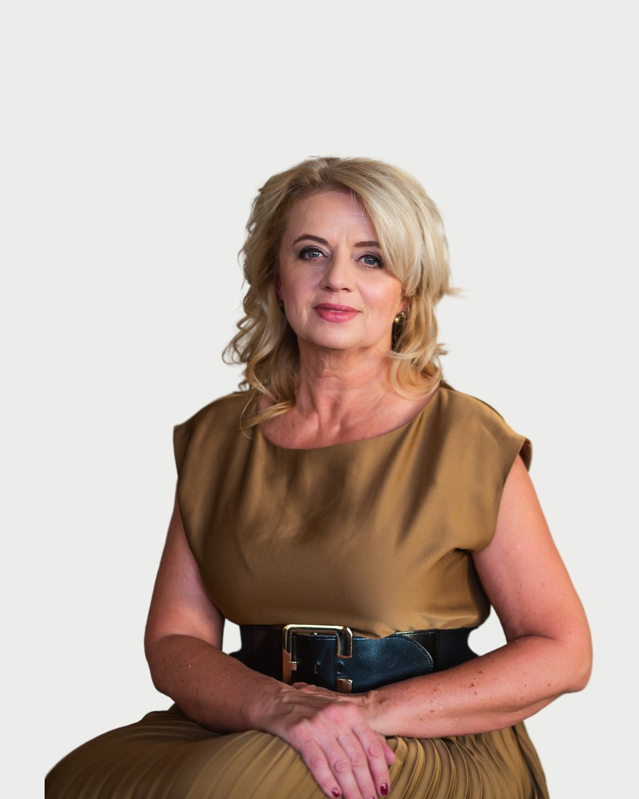

Regiszter 06 · Klinikai szakpszichológus
Bugán
Ildikó

Amiben segítek
- Párkapcsolati/kapcsolati nehézségek, konfliktusok kezelése
- Életvezetésben megjelenő elakadások, kilátástalanság érzése
- Alkalmazkodási problémák
- Hangulat zavarok
- Alvászavar
- Érzelmi, indulati labilitás
- Szorongásos panaszok
- Krízisintervenció, traumafeldolgozás
Nem az vagyok, ami történt velem, Az vagyok, amit döntöttem, hogy legyek." /C.G.Jung/
Rólam
Életünkben mindig adódnak nehézségek. A legtöbbet magunk meg tudjuk oldani, ha nem, akkor a megfelelő szakemberhez fordulunk.
Bugán Ildikó díja 18-25 ezer forint alkalmanként.
Képzés és szakmai út
A képzések és a szupervízió az akkreditált szakképzőhely rendjében folynak. Mit jelent ez Önnek
Iskolai végzettség
pszichológus és pszichológia szakos középiskolai tanár
klinikai és mentálhigiénia felnőtt szakpszichológus
Egyéb képzések
pszichodráma asszisztens (1997) utánképzési foglalkozásvezető (2005) integratív hipnoterapeuta képzés (2007, 2009) life coach (2015) igazságügyi pszichológus szakértő (1999 óta)
Tagságok
Magyar Pszichológiai Társaság
Magyar Orvosi Kamara
Igazságügyi Szakértői Kamara
Pályafutásom során szakmai képzettségeimet több területen hasznosítottam: pszichológiai alkalmasságvizsgálatok, krízisintervenció, igazságügyi szakértés, pszichodiagnosztikai tevékenység, egyetemi hallgatók képzése, coaching, egyéni és csoportos pszichológiai segítségnyújtás, tréning
Tanítómesterek
Akiknél a módszereket tanulta
- Dr Bugán Antal egyetemi tanár, a pszichológia tudomány kanditátusa, pszichoterapeuta
- Dr Szakács Ferenc klinikai szakpszichológus, egyetemi docens
- Dr Virág Teréz pszichoanalitikus
- Dr Kuritáné Dr Szabó Ildikó klinikai szakpszichológus, egyetemi oktató
- Dr Daubner Béla pszichiáter, kiképző pszichdoráma pszichoterapeuta
Rólam mondták
Kliensek visszajelzései, a hozzájárulásukkal
Ildikóval évek óta dolgozunk együtt, mert komplex gyerekkorból hozott traumákat, valamint rossz működési mechanizmusokat oldunk meg és transzformálunk. A fejlődés és a gyógyulás időigényes, de folyamatos, ahogy a türelem és a támogatás is. Ildikó szakmai tapasztalata, emberi hozzáállása nagyon sok erőt adott, és segített abban, hogy átlássam azokat az összefüggéseket, amelyek folyamatosan bénították az életem a munkám és a magánéletem terén. Őszintén ajánlom mindenkinek, hogy forduljanak hozzá bizalommal, bármilyen krízishelyzetről is legyen szó.
Ildikó az első pillanatban elmondta, hogy ne egy lineáris fejlődést várjak. Türelemmel el fogom érni azt, amiért jöttem. És a változás megérkezett, és vele a javulás is. Na nem úgy, ahogy vártam. Gondoltam, az egyik terápia során tűzijáték kíséretében megérkezik a tudatalattimból a megoldás receptje. Helyette nem oldódott meg az összes problémám, de úgy érzem, hogy könnyebben kezelem a nehéz helyzeteket. Sőt a leginkább az volt feltűnő, hogy néhány, korábban bizonyos feszültséget okozó szituációt úgy oldottam meg, hogy csak utólag jöttem rá, hogy ez régen kritikus helyzet lett volna.Ma már azt gondolom, hogy a mentális felkészültség, a mentális állapotunk, a lelkünk karbantartása pontosan olyan fontos, mint a testünk bármelyik része. Sőt nem csak akkor kell törődni vele, amikor már baj van, hanem meg lehet előzni a probléma kialakulását.
Ezúton szeretném hálás köszönetemet kifejezni Bugán Ildikó klinikai szakpszichológusnak, aki a Rorschach teszt helyes és hasznos gyakorlati alkalmazását megtanította és megszerettette velem. Emberileg és szakmailag is a legmagasabb minőséget képviseli. Legmerészebb álmaimban sem gondoltam volna, hogy a Ro tanulást örömmel és lelkesedéssel is lehet végezni, nem is beszélve a szép vizsgaeredményről, ami a közös munkánk "gyümölcseként" született.
Ildikóval kb. 10 éve ismerjük egymást, különböző életszakaszaimban felmerülő nehézségeim megoldásában, személyiségem pozitív irányba való alakulásában igazán nagy szerepet vállalt. Szeretem, hogy amellett, hogy objektíven szemlél, mindig képes olyan módon rávezetni a "megoldásra", hogy az könnyen befogadható legyen. Mindig nagyon vártam a terápiákat, a módszerek, amivel dolgoztunk, mindig relaxálttá és nyugodttá tettek.
Időpont Bugán Ildikónál
Az ügyfélszolgálat hétköznap 9 és 15 óra között egyeztet. Ha bizonytalan, hogy Ön kihez tartozik, azt is megbeszéljük.
Hasonló területen dolgoznak
Három kolléga, akinek a szakterülete a legközelebb áll Bugán Ildikó munkájához.